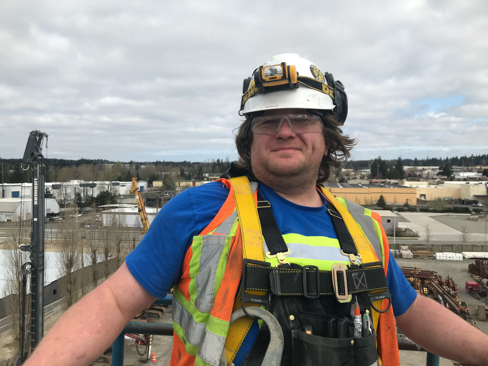
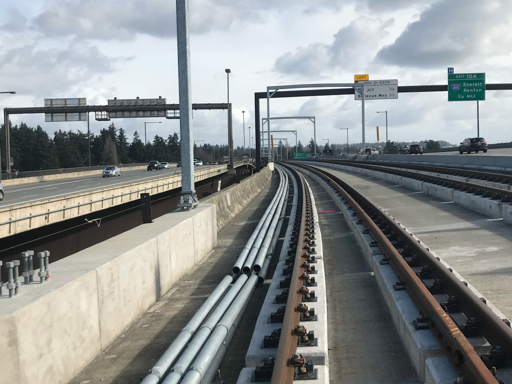

Yep, I'm a Working Dude
I can't believe it's been over 20 years since I started working in the trade! I feel really blessed that electrical has allowed me a decent living over the years.
In Washington state, we have different licenses for different types of electrical workers. I have an 01 License which allows me to work on any type of installation, from apartments and houses to commercial and industrial buildings.
Indeed I have worked on many different projects. I have also had the privilege of running work as a foreman. I ran a small boathouse job in Kenmore, a lighting retrofit project for a nursing home facility locally in Bremerton, even a small piece of the Sound Transit Light Rail that goes from Seattle to Bellevue! I was extremely proud to help install the electrical for some special roll up doors at Sea-Tac Airport.
After giving God the credit for the ability to do this job, I also want to give a shout out to my union IBEW Local 46 for finding good work for the membership and Puget Sound Electrical Apprenticeship for the excellent training!